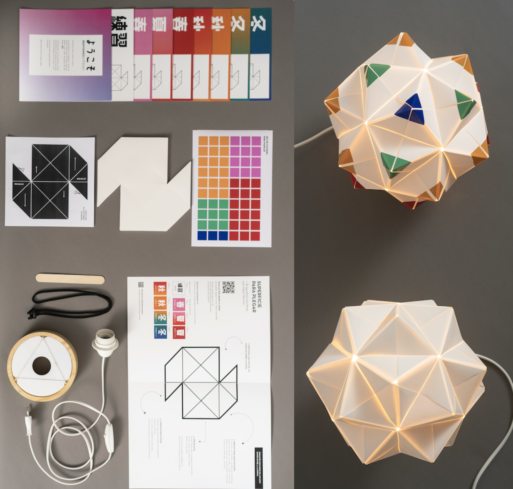

Descripción
El Kit Kusudama de Moshi Moshi Lamps propone una experiencia de creación a través del Origami modular. Sus módulos de papel se pliegan y encajan entre sí hasta formar una estructura tridimensional.
Una experiencia que combina diseño, iluminación y trabajo manual.
Materiales
- 32 módulos de papel mineral Stone Paper.
- Base acrílica.
- Cordel de compresión.
- Lámina de stickers con colores guía.
- Base de madera.
- Cable con enchufe e interruptor.
Proceso
El kit incluye tutoriales para aprender a construir una Kusudama desde cero. Los módulos se pliegan y posteriormente se ensamblan hasta conseguir una estructura tridimensional.